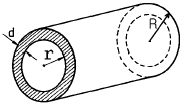

자기비파괴검사기사(구) (2004-09-05 기출문제)
1과목: 자기탐상시험원리
1. 1년 이상 사용하지 않은 극간법 장치들을 점검한 결과가 아래와 같이 나타났을 때 수리 또는 보수 전에는 사용하기 곤란한 장비는?
- 교류 장비로 인상력(Lifting power)이 4.6㎏인 장비
- 교류 장비로 인상력(Lifting power)이 5㎏인 장비
- 직류 장비로 인상력(Lifting power)이 15㎏인 장비
- 영구자석장비로 인상력(Lifting power) 20㎏인 장비
(정답률: 알수없음)

2. 다음 중 강재의 자화곡선에 영향을 주는 인자가 아닌 것은?
- 합금 성분
- 열처리 상태
- 탄소 함량
- 강재 길이
(정답률: 알수없음)
3. 다음 중 기계 가공면의 피로균열(fatigue crack)검사에 가장 알맞는 자분탐상 시험방법은?
- 교류 - 건식법
- 교류 - 습식법
- 반파정류 - 건식법
- 반파정류 - 습식법
(정답률: 알수없음)
4. 다음 중 자분탐상시험에 사용되는 자분에 요구되는 특성으로 옳지 않은 것은?
- 높은 투자율
- 높은 항자성
- 낮은 보자성
- 좋은 분산성
(정답률: 알수없음)
5. 다음 중 일반적으로 최종적인 자분탐상시험의 시기는 언제가 적당한가?
- 최종 가공이 완료되기 전으로서, 최종 열처리가 실시된 후에
- 최종 가공이 완료된 후로서, 최종 열처리가 실시되기전에
- 최종 가공 및 열처리가 완료된 후에
- 최종 열처리의 실시전으로서 아무 때나
(정답률: 알수없음)
6. 영구자석에서 자속선(Flux Line) 또는 자력선(Magnetic Lines)이란?
- 자석내에 N극에서 S극으로 흐르는 자력의 흐름
- 자화전류에서 60번/초의 방향을 전환하는 것을 의미
- N극에서 나와서 S극으로 들어가는 자력흐름의 가상선
- 어떤 경우이든 선형자장을 나타냄
(정답률: 알수없음)
7. 자분탐상시험은 자분모양에 의해 불연속을 검출하므로 자분모양의 식별성은 중요하다. 이 자분 모양의 식별성을 향상시키기 위하여 고려할 사항이 아닌 것은?
- 식별성은 백그라운드와의 대비에 의해 좌우되므로 형광자분을 사용할 때는 형광휘도가 낮은 것을 선택하여 사용해야 한다.
- 불연속부에 충분한 양의 자분이 흡착되도록 가능한한 균일하게 자분을 적용해야 한다.
- 적정한 자화로 불연속부로부터 충분한 누설자속이 얻어지도록 해야 한다.
- 관찰하기 편리한 환경에서 눈과 시험면의 거리를 두고 바른 관찰을 해야 한다.
(정답률: 알수없음)
8. 다음은 자기 센서를 이용한 누설자속탐상에서 선형결함의 상태와 누설자속과의 관계를 설명한 것이다. 틀린 것은?
- 결함 깊이가 깊을수록 누설자속이 커진다.
- 결함의 폭이 증가할수록 누설자속은 증가후 포화치에 이르는 경향이 있다.
- (결함 길이/결함 폭)이 클수록 누설자속은 증가후 포화치에 이르는 경향이 있다.
- 선형결함의 경사 각도(θ)가 작아질수록 누설자속량은 sinθ에 비례하여 증가한다.
(정답률: 알수없음)
9. 다음 중 비교적 적은 자계에서 자기포화가 되는 재료는?
- 고탄소강 또는 보자력이 큰 것
- 저탄소강 또는 투자율이 큰 것
- 고장력강 또는 잔류자기가 큰 것
- 스테인리스강 또는 담근질한 것
(정답률: 알수없음)
10. 다음 중 자분탐상시험시 충격전류를 사용하여 자화했을 때 어떤 경우에 가장 효과적인가?
- 선형자화된 봉재(棒材)의 중심부에 위치한 결함검출에 좋다.
- 원형자화된 봉재(棒材)의 양끝부에 존재하는 종방향 결함검출에 좋다.
- 선형자화된 봉재의 양끝부에 존재하는 횡방향 결함검출에 좋다.
- 원형자화된 봉재의 중심부에 위치한 종방향 결함검출에 좋다.
(정답률: 알수없음)
11. 다음 중 강(steel)으로 만든 와이어 로프(wire rope)의 단면적 손실, 표면의 마모, 선의 끊김 등의 건전성 여부 평가를 위하여 실시하는 비파괴검사법으로 가장 적절한 것은?
- 방사선투과시험
- 누설자속시험
- 와전류탐상시험
- 초음파탐상시험
(정답률: 알수없음)
12. 다음 중 자분탐상시험의 대상물이 아닌 것은?
- 주철
- 코발트
- Ni합금
- Al합금
(정답률: 알수없음)
13. 형광자분탐상시험시 시험을 위해 어두움에 적응되는 일반적인 적응 시간은?
- 10초
- 30초
- 5분
- 60분
(정답률: 알수없음)
14. 외경 50mm의 원통형 시험체를 자분탐상시험시에 원주방향의 결함을 검출하는데 가장 적합한 자화 방법은?
- 축통전법
- 프로드법
- 전류관통법
- 코일법
(정답률: 알수없음)
15. 극성은 불변이나 주기적으로 크기가 변화하는 자화전류는 무엇인가?
- 교류
- 직류
- 맥류
- 충격류
(정답률: 알수없음)
16. 다음 중 무관련지시가 발생되는 이유로 적당하지 않은 것은?
- 용접부 융착금속과 모재의 경계
- 시험체 큰 단면의 급변부
- 금속조직의 경계
- 용접부의 오버랩(Overlap)
(정답률: 알수없음)
17. 자분탐상검사의 단점에 대한 설명이다. 틀린 것은?
- 강자성체 이외의 재료에 대한 검사가 곤란하다.
- 시험체에 얇은 도막이나, 도금되어 있는 경우 검사가 불가능하다.
- 불연속의 방향과 자속 방향이 평행한 경우 검출이 곤란하다.
- 전기 접점에서 시험체에 손상을 주는 경우가 있다.
(정답률: 알수없음)
18. 반파직류 자분탐상기의 전류계를 교정하고자 DC션트메터(shunt-meter)를 사용하였다. 이 때 션트메터에 나타나는 측정 전류값은?
- 직류(DC) 전류값의 2/3에 해당하는 값이다.
- 직류 전류값의 1/2에 해당하는 값이다.
- 직류 전류값의 1/3에 해당하는 값이다.
- 직류 전류값의 1/4에 해당하는 값이다.
(정답률: 알수없음)
19. 도체에 흐르는 전류값(i)이 500[A]이며, 도체의 중심으로부터의 반경(r)이 4[cm]인 원주상의 자계의 세기 H[Oe]를 구하면?
- 6.25[Oe]
- 20[Oe]
- 25[Oe]
- 50[Oe]
(정답률: 알수없음)
20. 다음 중 홀(Hall)소자에 의한 누설자속탐상시험의 단점과 관련된 것은?
- 리프트오프효과(Lift off effect)
- 표피효과(Skin effect)
- 침투깊이(Penetration depth)
- 와전류 흐름(Eddy Current)
(정답률: 알수없음)
2과목: 자기탐상검사
21. 다음 중 자분탐상시험에서 금속 특성에 따른 예리한 무관련 지시가 잘 나타나는 경우라고 볼 수 없는 것은?
- 용접부 근처의 열영향부
- 주강품의 표면부
- 높은 항자력을 지닌 공구강
- 높은 보자력을 지닌 공구강
(정답률: 알수없음)
22. 전류관통법을 축통전법과 비교하여 특징을 열거한 것으로 틀린 것은?(단, 자계 = 자장)
- 시험체의 내부표면에 가장 높은 자계가 분포된다.
- 베어링, 너트와 같은 구멍이 있는 시험체는 많은 양을 한 번에 검사할 수 있다.
- 전류관통용 구리봉과 시험체의 접촉부분은 스파크 발생의 위험이 있다.
- 원형자계를 형성하므로 축방향에 평행으로 존재하는 결함이 잘 검출된다.
(정답률: 알수없음)
23. 자화방법의 종류를 선택할 때 원칙적으로 고려해야 할 사항이 아닌 것은?(단, 자계 = 자장)
- 자계가 탐상면에 골고루 분포되도록 한다.
- 반자계가 형성되지 않도록 한다.
- 자화전류는 시험체에 분포되는 자계를 포화값까지 높이 걸어 준다.
- 자속이 흐르는 방향에 대하여 결함은 수직에 가깝게 배치한다.
(정답률: 알수없음)
24. 강관에 대한 누설자속 탐상시험시 원주방향의 결함을 검출하기 위한 올바른 자화 방법은?
- 극간법을 사용하여 원주방향으로 자화한다.
- 코일법을 사용하여 원주방향으로 자화한다.
- 극간법을 사용하여 축방향으로 자화한다.
- 코일법을 사용하여 축방향으로 자화한다.
(정답률: 알수없음)
25. 자동 자분탐상검사에서 주로 사용되는 영상 검출장치에 관한 설명으로 다음 중 옳지 않은 것은?
- 주로 카메라와 컴퓨터를 이용하여 관찰한다.
- 검출 특성상 주로 비형광자분탐상검사법에만 적용된다.
- 검사원의 육안으로 관찰할 때에 비해 높은 명암도비(contrast ratio)가 요구된다.
- 카메라에는 적정파장의 빛만 통과하도록 필터를 사용한다.
(정답률: 알수없음)
26. 자분탐상시험에서 습식법을 적용하여 표면 바로 밑에 존재하는 결함을 검출할 수 있는데, 검출 가능한 이론적인 최대 깊이는?
- 0.2mm
- 0.5mm
- 1mm
- 2mm
(정답률: 알수없음)
27. 판재료에서 연화처리없이 압연방법으로 두께를 지나치게 감소시킬 때, 주로 판재의 표면에 가로 방향으로 나타나는 선형의 결함은?
- 균열
- 핫티어
- 스트링거
- 라미네이션
(정답률: 알수없음)
28. 자분탐상시험시 다음 중 의사모양인지 아닌지를 가장 효과적으로 알아보는 방법은?
- 보다 높은 전류로 자화하여 다시 검사하여 본다.
- 보다 낮은 전압으로 자화하여 다시 검사하여 본다.
- 탈자한 뒤 원하는 방향으로 자화하여 알아 본다.
- 다른 방향으로 자화하여 검사하여 본다.
(정답률: 알수없음)
29. 자분탐상시험시 의사자분모양은 다음 중 어느 경우에 발생하는가?
- 자화전류 선택이 잘못되었을 때
- 자화전류가 과도하게 높았을 때
- 자화전류가 정상보다 낮았을 때
- 검사체의 세척이 잘못되었을 때
(정답률: 알수없음)
30. 잠호 용접(Submerged Arc Welding)에서 간헐적인 넓고 흐린 자분모양이 습식법보다 건식법에서 잘 나타났다. 무슨 결함으로 판단되는가?
- 크레이터 균열
- 용입부족(IP)
- 표면하(Subsurface)의 슬래그 혼입(Slag Inclusion)
- 언더컷(Undercut)
(정답률: 알수없음)
31. 다음 중 자분탐상시험시 건식법에 사용되는 자분의 형상으로 가장 이상적인 것은?
- 길고 가는 형태
- 구형 형태
- 평평한 형태
- 가 및 나의 혼합 형태
(정답률: 알수없음)
32. 내경 r, 외경 R, 두께 d 인 파이프 형태의 도체에 전류를 흘렸을 때 자계(자장)가 최대가 되는 곳은?

- 중심 부분
- 중심에서 r 되는 곳
- r과 R의 중간되는 곳
- 중심에서 R 되는 도체의 표면
(정답률: 알수없음)
33. 강관이나 강봉을 연속적으로 누설자속탐상시의 주사 방식으로 적합하지 않는 것은?
- 탐상 헤드는 정지하고 시험체를 나선형으로 보낸다.
- 탐상 헤드는 직진하고 시험체를 회전시킨다.
- 탐상 헤드는 회전시키고 시험체를 직진시킨다.
- 탐상 헤드는 정지시키고 시험체를 직진시킨다.
(정답률: 알수없음)
34. 자분탐상시험시 냉간가공이 된 부분의 의사모양이 갖는 특징은?
- 탈자 후 다시 검사하면 나타나지 않는다.
- 반대방향에서 다시 검사하면 나타나지 않는다.
- 응력을 제거한 후 다시 검사하면 나타나지 않는다.
- 시험 전류를 높여 다시 검사하면 나타나지 않는다.
(정답률: 알수없음)
35. 자외선조사등의 점검사항을 설명한 것으로 옳지 않은 것은?
- 점검은 자외선 강도계를 사용하여 실시한다.
- 점검은 필터면에서 규정된 거리만큼 떨어진 거리에서 측정한다.
- 점검된 자외선조사등의 강도가 1,200μW/cm2 이면 시험에 사용할 수 있다.
- 자외선조사등이 안정되도록 점등 후 최소 1분 후에 점검한다.
(정답률: 알수없음)
36. 건식자분과 프로드법을 사용하여 시험할 때 시험체의 두께가 19mm를 초과하고 프로드 간격이 152mm일 때 적정한 자화전류 범위로 맞는 것은?
- 200 ~ 300 Amp.
- 300 ~ 400 Amp.
- 400 ~ 600 Amp.
- 600 ~ 750 Amp.
(정답률: 알수없음)
37. 전류관통법에 대한 설명으로 맞는 것은?
- 자속밀도가 가장 높은 곳은 시험체 내부표면이다.
- 원주방향 결함을 찾는데 좋은 자화방법이다.
- 자화전류는 시험체의 길이에 크게 좌우된다.
- 내경이 큰 시험체의 경우 직경이 작은 도체로도 한번에 검사가 가능하다.
(정답률: 알수없음)
38. 비접촉법에 의한 자분탐상시험의 자화기기가 아닌 것은?
- 프로드 전극
- 코일
- 전류 관통봉
- 자속 관통봉
(정답률: 알수없음)
39. 자분탐상검사에 사용되는 자분에 대한 설명이다. 잘못된것은?
- 자분은 저보자성인 강자성체 재질로 만든다.
- 자분은 유동성이 좋아야 하므로 막대기형으로 된 것을 사용한다.
- 자분을 선정할 때 콘트라스트를 고려해야 한다.
- 건식자분은 표면하 결함의 검출에 가장 좋은 감도를 나타낸다.
(정답률: 알수없음)
40. 직경 20㎜, 길이 80㎜의 단조품인 볼트나사 부위에 대한 원주방향 결함을 검출하는데 다음 중 가장 적합한 자분탐상시험의 조건은?
- 흑색자분, 프로드법, 연속법
- 흑색자분, 코일법, 건식법
- 형광자분, 코일법, 습식법
- 형광자분, 프로드법, 잔류법
(정답률: 알수없음)
3과목: 자기탐상관련규격및컴퓨터활용
41. KS D 0213에 따라 자분탐상시험 후 시험기록시 시험체에 대해 기재할 사항에 속하지 않는 것은?
- 품명
- 형태
- 치수
- 표면상태
(정답률: 알수없음)
42. KS D 0213 A형 표준시험편중 직선형으로 인공 결함의 깊이가 30μm이고, 판 두께가 100μm라 할 때 표시 방법으로 옳은 것은?
- 100-30
- 30-100
- 100/30
- 30/100
(정답률: 알수없음)
43. 직접 접촉법, 축통전법을 사용하여 시험체를 자화하는 경우 ASME Sec.V의 요구사항에 따르면 직경 2인치, 길이 6인치의 시험체를 자화하는데 소요되는 전류 값으로 다음중 적당한 것은?
- 35,000[A.T]
- 1,000[A]
- 45,000[A.T]
- 3,000[A]
(정답률: 알수없음)
44. ASME code에 따르면 건식자분을 사용시 표면온도가 몇 도를 초과하면 수행하지 말아야 하는가?
- 135℉
- 300℉
- 400℉
- 600℉
(정답률: 알수없음)
45. KS W 4041의 규정에 따라 검사필 부품의 기호지정이 되었을 경우 합격품을 표시하는 방법은?
- 알루미늄 페인트(Aluminum Paint)로 칠한다.
- "M"자로 도장을 찍거나 에칭 또는 착색한다.
- 여러가지 색깔로 표시한다.
- "OK"로 도장을 찍거나 꼬리표를 붙인다.
(정답률: 알수없음)
46. KS D 0213에 따라 자화할 때, 자계의 방향 및 강도를 확인하는데 사용되지 않는 것은?
- A형 표준시험편
- B형 대비시험편
- C형 표준시험편
- 가우스 미터
(정답률: 알수없음)
47. 인터넷의 도메인 네임(Domain Name)분류 중 기관 표기로 "or" 에 해당하는 미국의 도메인 네임 분류로 맞는 것은?
- com
- net
- org
- gov
(정답률: 알수없음)
48. 자분탐상시험법의 자화방법에 대한 기호 중 잘못 짝지워진 것은?
- 전류관통법 - B
- 코일법 - C
- 축통전법 - T
- 극간법 - M
(정답률: 알수없음)
49. KS D 0213에서 자화에 대한 설명으로 틀린 것은?
- 자계의 방향을 예측되는 흠의 방향에 대하여 가능한한 평행하게 한다.
- 시험면을 태워서는 안될 경우 간접 통전하는 방식을 선택하는 것이 좋다.
- 반자계를 가능한한 적게 한다.
- 자계의 방향을 시험면에 가능한한 평행으로 한다.
(정답률: 알수없음)
50. KS D 0213에 따른 표준시험편에 관한 내용중 틀린 것은?
- A형 표준시험편의 자분 적용은 연속법으로 한다.
- B형 대비시험편은 장치, 자분의 성능평가에 이용된다
- C형 표준시험편은 B형 대비시험편의 적용이 곤란한 경우 사용된다.
- C형 표준시험편의 자분 적용은 연속법으로 한다.
(정답률: 알수없음)
51. ASME SE-709에 따라 자분탐상시험을 실시할 때 극간의 거리가 50∼100mm인 경우 사용하는 교류형 요크(yoke)는 최소 몇 kg의 보정시편을 들어 올릴 수 있어야 하는가?
- 25N(2.5kg)
- 45N(4.5kg)
- 90N(9kg)
- 180N(18kg)
(정답률: 알수없음)
52. ASME SE 709에 의거 검사액 100㎖ 중 비형광자분의 부피는?
- 0.1 ~ 0.5㎖
- 0.5 ~ 1.0㎖
- 1.2 ~ 2.4㎖
- 3.0 ~ 3.5㎖
(정답률: 알수없음)
53. 시스템의 날짜, 시간, HDD 타입 등의 정보를 기억하고 있는 것은 무엇인가?
- RAM
- ROM
- BIOS
- CMOS
(정답률: 알수없음)
54. KS D 0213에서 P-1500Ⓓ의 의미로 알맞는 것은?
- 코일법을 사용, 교류 1500A의 전류를 흘리고 탈자함
- 극간법을 사용, 직류 1500A의 전류를 흘리고 전처리
- 프로드법 사용, 직류 1500A의 전류를 흘리고 탈자함
- 축통전법 사용, 교류 1500A의 전류를 흘리고 후처리
(정답률: 알수없음)
55. ASME Sec.V SE-709에 의해 자분탐상시험시 건식자분을 사용할 수 있는 최대 온도로 다음 중 맞는 것은?
- 57℃
- 90℃
- 107℃
- 315℃
(정답률: 알수없음)
56. 다음은 통신 프로토콜에 대한 설명이다. 가장 적절하지 않은 것은?
- 통신 프로토콜은 반드시 표준을 따라야 한다.
- 컴퓨터 시스템 사이의 통신 규약이다.
- 동일한 프로토콜을 사용하여야 통신이 가능하다.
- TCP/IP도 프로토콜의 한 예이다.
(정답률: 알수없음)
57. Windows98의 디스플레이 등록정보에서 할 수 있는 기능들 중 틀린 것은?
- 배경화면을 내가 좋아하는 사진이나 배경으로 바꿀 수 있다.
- HTML문서는 배경 화면으로 지정할 수 없다.
- 일정시간이 경과하여도 컴퓨터를 사용하지 않으면 화면 보호기를 사용하여 화면을 보호할 수 있도록 할 수 있다.
- 화면 배색을 조정할 수 있다.
(정답률: 알수없음)
58. 자료 전송방식의 하나로서 한 글자를 이루는 각 비트들이 하나의 전송선을 통하여 한 비트씩 순서적으로 전송되는 방식은?
- 아날로그 전송
- 디지털 전송
- 직렬 전송
- 병렬 전송
(정답률: 알수없음)
59. 원심 침전관을 사용하여 자분의 농도를 측정하고자 한다. 물을 매질로 하는 현탁액을 튜브에 넣은 후 얼마 후에 측정을 해야 하는가?
- 15분
- 30분
- 45분
- 60분
(정답률: 알수없음)
60. ASME Sec.Ｖ, Art.7에서 자장 지시계의 용도를 가장 잘 나타낸 것은?
- 전류치 측정
- 결함위치 측정
- 결함의 깊이 측정
- 자계 방향의 적합성 측정
(정답률: 알수없음)
4과목: 금속재료학
61. 스테인리스강의 주요 성분으로 맞는 것은?
- P-Mn
- S-Se
- Si-Pb
- Ni-Cr
(정답률: 알수없음)
62. Cu의 결정 구조는 FCC이다. lattice parameter가 3.61Å 일 때 Cu의 밀도는? (단, Cu의 원자량은 63.54 gr이고, Avogadro 수는 6.023 × 1023 molecule/mole이다)
- 약 9.95 g/cm3
- 약 8.95 g/cm3
- 약 6.48 g/cm3
- 약 4.48 g/cm3
(정답률: 알수없음)
63. Aℓ - Cu - Mg 합금에 있어서의 S′ 중간상의 형상을 옳게 나타낸 것은?
- 만곡(bend)상이다.
- 구(sphere)상이다.
- 라스(lath)상이다.
- 실린더(cylinder)상이다.
(정답률: 알수없음)
64. 동합금중에서 가장 높은 강도와 경도를 얻을수 있는 석출 경화성 합금은?
- Cu - Be 합금
- Cu - Sn 합금
- Cu - Zn 합금
- Cu - Cr 합금
(정답률: 알수없음)
65. 항복점이 크고 내마모성이 양호한 레일과 차륜을 만들려고 할 때 어느 재료를 선택하는 것이 가장 좋겠는가?
- 0.1% 탄소강
- 0.7% 탄소강
- 1.2% 탄소강
- 2.0% 탄소강
(정답률: 알수없음)
66. 응고 온도 범위가 넓고 역편석(inverse segregation)이 나타나는 것은?
- 알루미늄 청동
- 주석 청동
- 알루미늄 황동
- 함규소 황동
(정답률: 알수없음)
67. 공정형 상태도를 나타내는 가장 대표적인 합금은?
- Cu - Ni
- Cu - Aℓ
- Aℓ - Si
- Ni - Fe
(정답률: 알수없음)
68. 침상 주철(acicular cast iron)의 바탕의 주 조직은?
- 베이나이트
- 미세한 펄라이트
- 마텐자이트
- 오스테나이트
(정답률: 알수없음)
69. 구상흑연 주철의 첨가제, Zr, U, Ti의 환원용, 전기 방식용 양극으로 사용되는 비철 금속은?
- Zn
- Mg
- Aℓ
- Sn
(정답률: 알수없음)
70. 쾌삭강(free cutting steel)은 어느 성분을 더 함유시킨 것인가?
- C
- Si
- Mn
- S
(정답률: 알수없음)
71. 탄소강판이나 기계가공부에 존재하는 결함의 검출에 적합한 비파괴 시험은?
- 슴프 측정법
- 자분 탐상법
- 스프링 시험법
- 크리프 시험법
(정답률: 알수없음)
72. 열전대 중 가장 높은 온도를 측정할 수 있는 것은?
- 백금-백금 로듐
- 철-콘스탄탄
- 크로멜-알루멜
- 구리-콘스탄탄
(정답률: 알수없음)
73. 고체 침탄법에서 침탄제로써 가장 우수한 것은?
- 목탄 및 코크스
- NaCN과 KCN
- NaCl2 및 CaCO3의 혼합물
- 목탄 60%와 BaCO3의 혼합물
(정답률: 알수없음)
74. 냉각속도가 600℃/sec 에 도달하면 Ar' 변태는 완전히 없어지고 Ar“ 변태만이 일어나 완전 마텐자이트의 조직으로 되는 것은?
- 분열변태냉각속도
- 항온변태속도
- 상부임계냉각속도
- 하부변태속도
(정답률: 알수없음)
75. 합금의 미세화 처리를 목적으로 용융금속에 금속 나트륨을 첨가한 것은?
- Cu - Zn 계
- Zn - Aℓ - Cu 계
- Aℓ - Si 계
- Cu - Ni 계
(정답률: 알수없음)
76. Ni 합금에서 염산에 대한 내식성의 향상을 위하여 첨가하는 원소로 가장 좋은 금속은?
- Aℓ
- Pb
- Mo
- Si
(정답률: 알수없음)
77. 강을 침탄한 후 1, 2차 담금질을 하는 목적은?
- 1차는 중심부 미세화, 2차는 표면을 경화 시킨다.
- 1차는 중심부 조대화, 2차는 표면을 미세화 시킨다.
- 1차는 중심부 미세화, 2차는 표면을 연화 시킨다.
- 1차는 중심부 조대화, 2차는 응력을 제거시켜 준다.
(정답률: 알수없음)
78. 강에서 발생하는 백점(flake)의 주 원인은?
- 산소
- 수소
- 질소
- 황
(정답률: 알수없음)
79. 금속의 용해에 Si 등의 산성 산화물이 생기는 경우 사용해서는 안되는 내화물은?
- Aℓ 2O3
- SiO2
- CaO
- Cr2O3
(정답률: 알수없음)
80. Cr-Mo강에 대한 설명이 틀린 것은?
- Cr강에 소량의 Mo을 첨가하면 펄라이트강이 된다.
- Cr-Mo강에는 C가 대략 0.27-0.48[%] 정도이다.
- Cr-Mo강의 기계적 성질은 Ni-Cr강과 비슷하여 용접도 용이하다.
- Cr-Mo강은 Mo가 들어있어 뜨임취성이 크다.
(정답률: 알수없음)
5과목: 용접일반
81. 다음의 연강 용접이음 중 이음의 정적강도가 가장 작은 이음의 종류는?
- 양쪽 덥개판 전면 필릿용접
- 양쪽 덥개판 측면 필릿용접
- 원형 플러그 용접
- 맞대기 홈용접
(정답률: 알수없음)
82. 고속 회전운동을 하는 한쪽 재료에 다른 한쪽을 접촉시키고 축방향으로 힘을 가하여 생성되는 열을 이용하여 용접하는 것은?
- 마찰 용접
- 저주파 용접
- 폭발 용접
- 고주파 용접
(정답률: 알수없음)
83. 일반적인 용접작업의 순서를 나열한 것으로 다음 중 가장 적합한 것은?
- 용접부 청소 → 절단 및 가공 → 가접 → 검사 및 판정 → 본용접
- 절단 및 가공 → 용접부 청소 → 본용접 → 가접 → 검사 및 판정
- 가접 → 용접부 청소 → 절단 및 가공 → 본용접 → 검사 및 판정
- 절단 및 가공 → 용접부 청소 → 가접 → 본용접 → 검사 및 판정
(정답률: 알수없음)
84. 다음 용접의 종류 중 비가열식 압접인 것은?
- 폭발 용접
- 업셋 용접
- 시임 용접
- 마찰 용접
(정답률: 알수없음)
85. 용적이 40리터인 산소 용기의 고압계가 90㎏f/㎝2 으로 나타났다면 시간당 300리터의 산소를 소비하는 팁으로는 이론적으로 몇 시간 용접할 수 있는가? (단, 산소와 아세틸렌의 혼합비는 1:1 이다)
- 6시간
- 9시간
- 12시간
- 15시간
(정답률: 알수없음)
86. 가동 철심형 아크 용접기의 특성 설명으로 틀린 것은?
- 광범위한 전류 조정이 어렵다.
- 미세한 전류 조정이 불가능하다.
- 누설자속의 가감으로 전류를 조정한다.
- 누설자속의 영향으로 아크가 불안정하게 되기 쉽다.
(정답률: 알수없음)
87. 연납땜과 경납땜은 땜납의 융점 온도 몇 ℃를 기준으로 하는가?
- 250
- 350
- 450
- 550
(정답률: 알수없음)
88. 저수소계 피복아크 용접봉의 건조온도 및 건조시간으로 다음 중 가장 적합한 것은?
- 150~200℃, 2시간
- 300~350℃, 1 ~ 2시간
- 200~300℃, 3시간
- 100~150℃, 3 ~ 4시간
(정답률: 알수없음)
89. 주철의 아크 용접시 균열 방지방법이 아닌 것은?
- 예열과 후열을 한다.
- 열영향부를 백선화시킨다.
- 용접 후 열간 피닝을 한다.
- 순 니켈 용접봉을 사용한다.
(정답률: 알수없음)
90. 1차 입력전원이 24.2[KVA]인 피복 아크용접기를 1차 전원 전압 220[V]에 접속하고자 할 경우 퓨즈(fuse) 용량으로 가장 적합한 것은?
- 220[A]
- 200[A]
- 110[A]
- 100[A]
(정답률: 알수없음)
91. 다음 중 예열불꽃이 강할 때 절단에 미치는 영향으로 올바른 것은?
- 절단속도가 늦어진다.
- 드래그가 증가한다.
- 역화를 일으키기 쉽다.
- 절단면이 거칠어진다.
(정답률: 알수없음)
92. 정격 2차전류가 200A, 정격 사용율이 30%인 용접기로 180A로 용접할 경우 허용 사용율은 약 몇 % 인가?
- 33
- 37
- 53
- 67
(정답률: 알수없음)
93. 다음 중 겹쳐놓은 두개의 용접재 한쪽에 둥근 구멍 대신에 좁고 긴 홈을 만들어 놓고 그 곳을 용접하는 이음의 형태는?
- 슬롯 용접(Slot weld)
- 비드 용접(Bead weld)
- 플러그 용접(Plug weld)
- 플레어 용접(Flare weld)
(정답률: 알수없음)
94. 피복아크 용접회로에서 전류가 용접전원에서 흐르기 시작하여 용접전원으로 되돌아오는 순서로 가장 적합한 것은?
- 전원 → 용접봉홀더 → 아크 → 용접봉 → 모재 → 전원
- 전원 → 용접봉홀더 → 용접봉 → 아크 → 모재 → 전원
- 전원 → 아크 → 용접봉 → 모재 → 용접봉홀더 → 전원
- 전원 → 용접봉 → 용접봉홀더 → 아크 → 모재 → 전원
(정답률: 알수없음)
95. 용접전류 300A, 아크전압 35V, 아크길이 3mm, 용접속도 20cm/분의 용접 조건으로 피복 아크용접을 실시할 경우 아크가 단위길이 1cm당 발생하는 전기적 에너지는?
- 7560 joule/cm
- 9450 joule/cm
- 15750 joule/cm
- 31500 joule/cm
(정답률: 알수없음)
96. AW-300 무부하 전압 80V, 아크 전압 30V인 교류아크 용접기를 사용할 경우 용접기의 역률 및 효율은 몇 % 인가?(단, 용접기의 내부 손실은 5kW 이다.)
- 역률 58.3, 효율 64.3
- 역률 62.5, 효율 58.3
- 역률 64.3, 효율 58.3
- 역률 58.3, 효율 62.5
(정답률: 알수없음)
97. 비드밑 균열의 비파괴 검사방법으로 가장 적합한 것은?
- 외관 검사
- 초음파 투과시험
- 자분 탐상시험
- 방사선 탐상시험
(정답률: 알수없음)
98. 불활성가스 텅스텐 아크용접(TIG용접)에서 아크쏠림(Arc Blow 또는 Magnetic Blow) 현상이 일어나는 원인이 아닌것은?
- 자장 효과(magnetic effects)
- 용접 전류 조정이 너무 낮게 되었을 때
- 텅스텐 전극봉이 탄소에 의해 오염 되었을 때
- 풋 컨트롤(foot control)장치로 전류를 감소시킬 때
(정답률: 알수없음)
99. 용접부의 기공 발생에 대한 원인으로 가장 관계가 적은 것은?
- 용접부의 급속한 응고
- 용접봉과 이음부의 습기
- 용접 이음 설계의 부적당
- 모재 중 황(S)의 함량이 클 경우
(정답률: 알수없음)
100. 피복 금속아크 용접시 모재측의 발열량의 크기를 순서대로 표시한 것으로 옳은 것은?
- 직류 역극성 ＞ 교류 ＞ 직류 정극성
- 교류 ＞ 직류 역극성 ＞ 직류 정극성
- 교류 ＞ 직류 정극성 ＞ 직류 역극성
- 직류 정극성 ＞ 교류 ＞ 직류 역극성
(정답률: 알수없음)